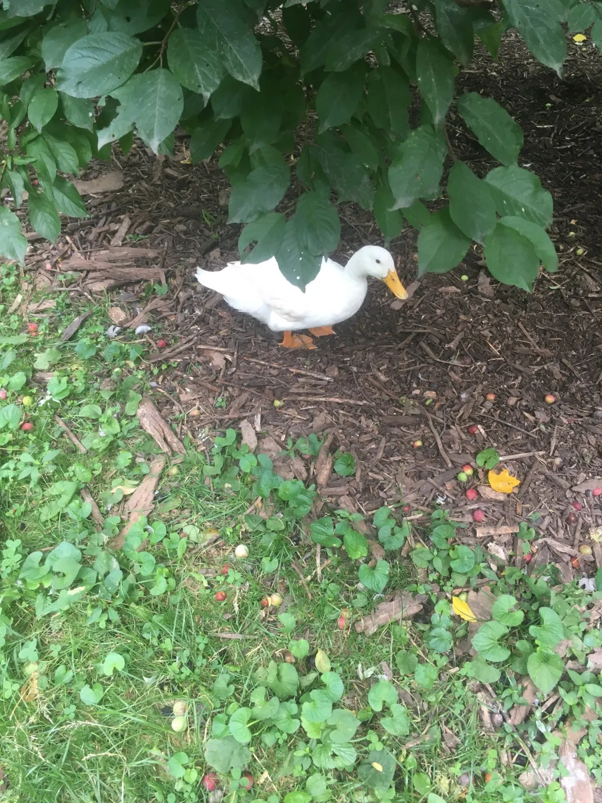
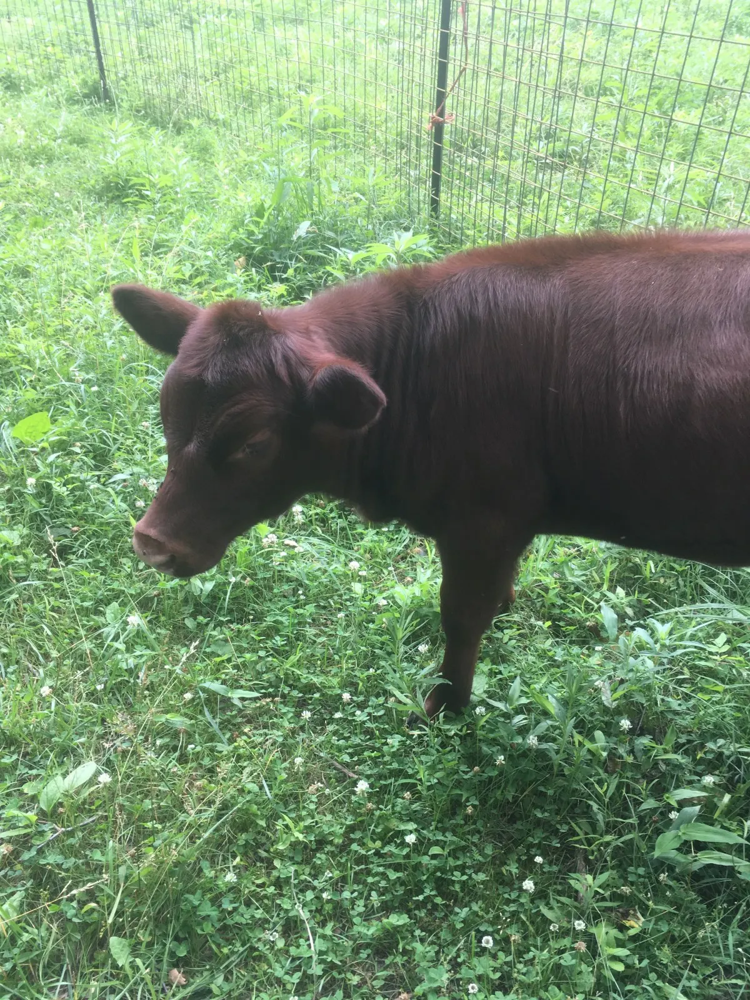
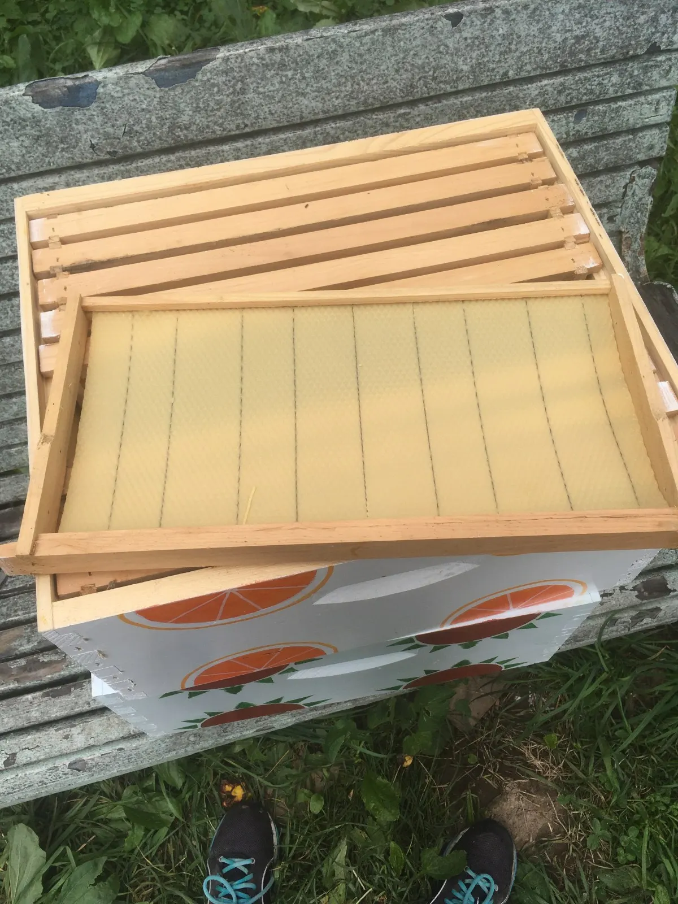
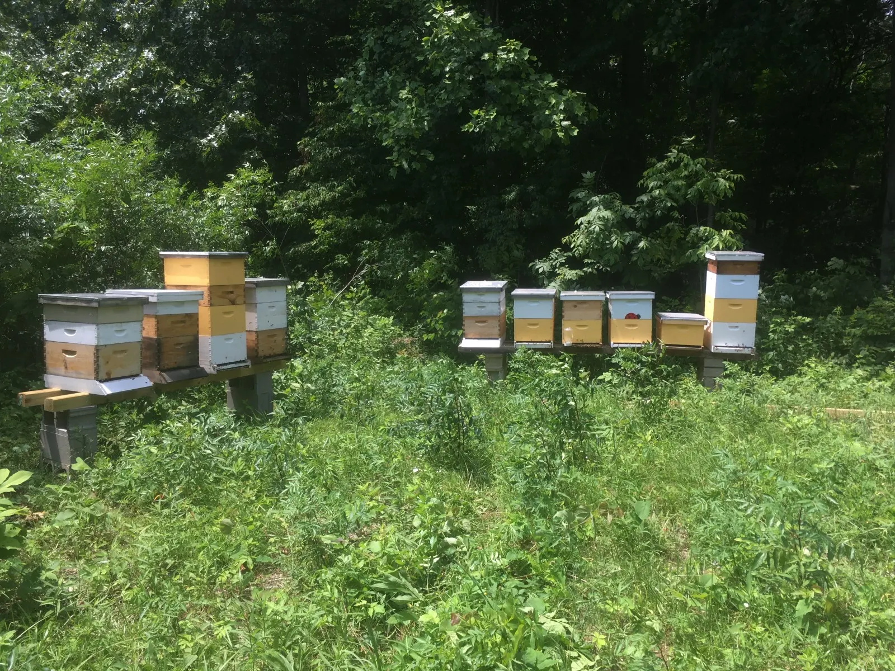
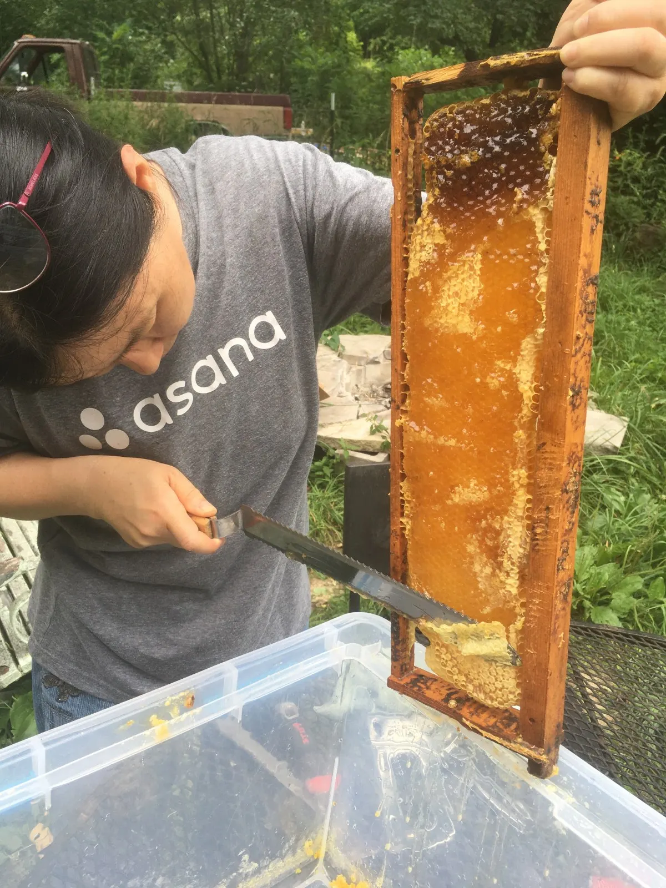
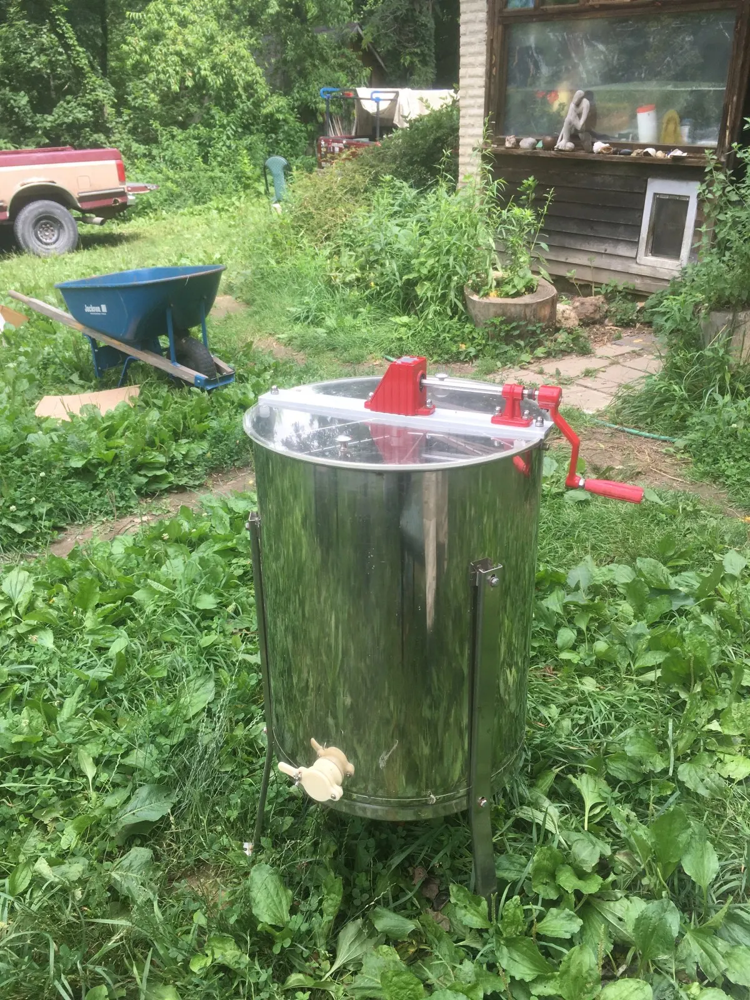
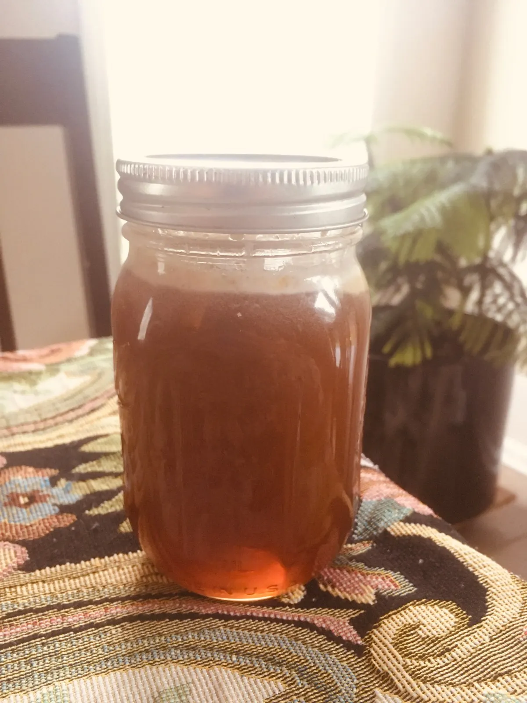

I have always wanted to work and live on a farm. My mom loves to garden and is a big proponent of local, organic food. Recently, she has become obsessed with plants — every time we go on walks she’ll point out the black walnut, maple, oak, sweet gum, and poison ivy. I have also become somewhat fascinated by them, especially after watching her pollinate a squash that looked like a mini watermelon that we ate a week later, and reading Braiding Sweetgrass (a must-read). Growing up, my family would also spend most of our vacations hiking and camping in national parks. These experiences fostered my appreciation of sustainable agriculture (and homegrown fruits and vegetables!) and the outdoors. Having been working at a desk job for the last two years and about to start law school in the fall, I wanted to get my hands dirty, live a simple life, and reconnect with the land and the source of our food before going back to the city. I wanted to learn as much as I can about sustainable and regenerative agriculture, and how a farm functions. I wanted to learn how to garden and take care of animals.
I had heard good things about WWOOF, or World Wide Opportunities on Organic Farms, a nonprofit organization that matches farmers with volunteers who want to work on a farm in exchange for room and board. So I decided to visit a couple potential farms today, and volunteered on one of them.
I visited a farm today in Indiana. There was rain in the forecast but it turned out to be a sunny, warm, beautiful day with a light breeze. We arrived around 9.30 in the morning and were greeted by their two dogs, Bumblebee and Masha. They didn’t even bark at us — they were so friendly and welcoming. Aaron, the main farmer, gave me a tour. They owned a total of 24 acres, with 6 acres of pasture, orchard, and garden, and the rest surrounded by forest. There were peach and plum trees — the fruits were smaller than the ones in the stores but still tangy and sweet. There was one rooster that constantly cock-a-doodle-doo-ed, and large white ducks.


We visited the goats and cows, who were so adorable and came up to us and followed us. I could hang out with them all afternoon. But we continued on, past the pond (where you can go for a swim), an open-air dome construction perfect for yoga and meditation, the greenhouse where they were planting tomatoes, garlic, and other crops, the grain house, and a cozy wooden tiny house that Aaron is still building.
The focus of the day, however, was honey harvesting. Aaron told me how he had started out with 10 beehives, but they had self-pollinated and now grown to 30 hives! He hopes to eventually make enough honey to sell at the farmers market, and is also applying for a winery license, as he hopes to make mead, or honey-wine. First, I rinsed and wiped the equipment as it hadn’t been used in a year. I then helped make beehive frames for future use, inserting the wax layer into these wooden frames that become the foundation for the bees to make their honey on.

There was a small group of people there, and we had burgers for lunch on two slabs of bread — a burger patty, freshly grown shiitake mushrooms, a squash that looked like yellow zucchini, lettuce, and tomato, and “gas station mayonnaise” — the tiny packets that one of his friends had secured. The mushrooms were especially delicious, as Aaron cooked them in a skillet with duck lard! As we ate, we talked about both serious things (e.g. the current drought in CA that may soon become the worst drought in state modern history — and Indiana wasn’t completely unaffected by climate change; I learned that the late frost last year had mostly ruined their fruit crop) and non-serious things (i.e., Game of Thrones).
Then it was time to get the honey! We drove in his red pickup truck 2 miles away and up a steep hill (where the road was unpaved and so we drove on grass) to the stacks of yellow and white boxes of hives. I strapped on the white bee suit (which already felt hot — I thought about how frontline workers in India had to wear PPE protection suits in 100º+ weather when cremating bodies, which I can’t even imagine). Aaron kept having to remind me not to stand in front of the beehives — apparently it makes the bees angry. The first thing he did was make some smoke, which he did by lighting up paper. I had watched a YouTube video of honey harvesting yesterday so I wouldn’t be entirely clueless, and remembered that the smoke makes the bees drowsy. Aaron clarified that it’s because it alerts the bees to a potential fire, and distracts them because they’re thinking about protecting themselves, whether by leaving the hive or eating honey to fuel themselves. I mostly watched and pumped smoke at the bees as Aaron picked out the boxes where the honeycombs were full and ready to harvest.

Once we had evacuated the bees out, we took the honeycombs back to the farm. At this point, my parents had arrived, so my mom helped out. First, we had to cap off the honeycombs, using long knives to saw back and forth, slicing off the thin wax layer, which the bees made to protect the honey and keep it moist. For the remaining wax bits, you just need to poke it loose so that the honey flows out. It looked easier than it turned out to be — I kept slicing off too much of the desired honey. After a few frames our hands were quite sticky, but the honey was so sweet and delicious!

Then we separated the honey out from within the wax frames by spinning them. We put them into the metal centrifuge I had washed this morning, and turned a knob to spin them, where the centrifugal force causes the honey to fling out from the combs. The first time I did it, I didn’t know how long I was supposed to do it, and it looked like the honey was still on the combs, so I kept spinning, as sweat began to accumulate on my forehead. The knob resisted as I turned, but that’s how I thought it was supposed to be, and I just tried to think about how great of an arm workout this was. Turns out I spun it for way longer than I needed to, because I was only spinning one side — the other side had in fact been dry! Additionally, the spun out honey had accumulated at the bottom of the metal cylinder, so I was actually spinning and whipping the actual honey around, hence all the resistance! After we opened the spout so that the honey could start to drain out into a bucket, it became much easier to spin. Most of the bees were gone, but there were still a couple here and there — one was attracted by the honey flowing into the bucket and ended up falling into it — Aaron rescued it and it was quite sticky, but I think alive — how sad and ironic it would be if a bee drowned in its own honey. Once the honey was all spun out, we put the frames back in the box to go back to the hives for the bees to reuse!

As a thank you for our work, we were given a jar of freshly made raw honey home to enjoy.

It is certainly hard work, but think about how hard the bees had to work to make this honey! Now when I enjoy some, I can appreciate all the work that went in to making honey.
I quickly found that the experience of working on a farm is much more than just the manual labor itself. While working, eating, or walking/driving to places, there was plenty of time to chat and ask questions. Throughout the day I learned more about the farm through conversation — the projects going on, the history and future plans for the farm (and farmer), what it’s like to live out here. Funny how while people are pretty spread out here, they know their neighbors around the area like friends, but while living in the city, where you live right next door to people, I barely knew my neighbors! I learned other random things, e.g. I saw what a garlic and asparagus plant look like, and tried a black walnut! They had this fancy machine just for cracking them open, because apparently they’re one of the hardest nuts out there. It tasted fruity. I also learned what a pawpaw is — it’s a tropical fruit, nicknamed the Indiana Banana, and the largest edible native fruit in North America! The trees grow in deep woods throughout the eastern half of the United States, and of course, all around Indiana. They produce oval-shaped greenish-blackish fruit with a yellow flesh, usually three to six inches long, and can be made into beer. Life is so simple (but not easy) on a farm, and I am a strong believer that everyone would benefit by spending some time on a farm.